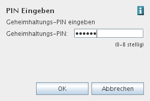

PIN Abfragen
Bei Karten mit dem ACOS Betriebssystem müssen die PINs verifiziert werden um ihren Status zu ermitteln. Den Status dieser als UNBEKANNT angeführten PINs können Sie über die Schaltfläche 'Abfragen' verifizieren.

Geben Sie dazu die PIN im dafür vorgesehenen Feld ein.

Nach erfolgreicher Eingabe wird die PIN entsprechend ihrem Status als AKTIV, NICHT AKTIV oder GESPERRT angeführt.